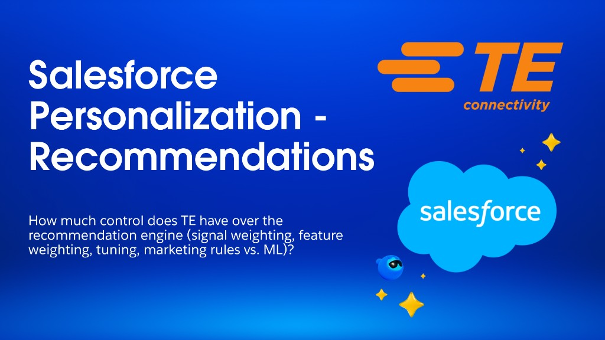

Your question
How much control does TE have over the recommendation engine (signal weighting, feature weighting, tuning, marketing rules vs. ML)?
Building Effective Recommenders in Salesforce
An overview of how to configure and deploy recommendation strategies using Salesforce Personalization.
- Preparation & validation: simulate strategies in a "white box" environment and test efficacy with internal or power users before going live.
- Configuring recommenders: choose data sources (real-time graph) and define target items — products, families, categories, or content.
- Recommendation logic: rule-based "wisdom of the crowd" or objective-based one-to-one ML decisioning to drive specific behaviors.
- Refining results: apply inclusion/exclusion criteria across decision context, static campaign rules, and profile data graph.